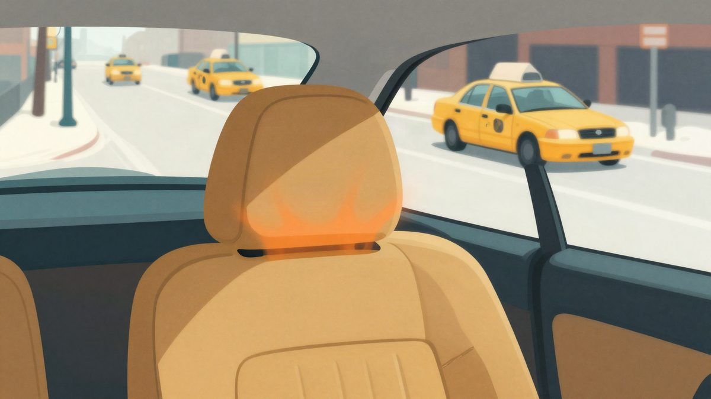

New York zabranio pretplate za grijanje sjedala i druge funkcije koje su već ugrađene u auto

New York je zabranio proizvođačima, dealerima i trećim stranama naplatu naknada za funkcije čiji je hardware već ugrađen u auto, među njima grijanje sjedala i volana te daljinsko pokretanje motora. Zakon vrijedi od 27. veljače 2027., a kazna je do 250 dolara po prodajnom mjestu za svaki prekršaj. Izuzeti su navigacija, infotainment, Wi-Fi i sustavi pomoći pri vožnji.
Savezna država New York zabranila je autoindustriji naplatu pretplate za funkcije čiji je hardware već ugrađen u vozilo. Zakon S.9348A/A.10411A potpisan je 23. studenoga, što stoji na web stranici ureda guvernera. Primjenjivat će se od 27. veljače 2027., 90 dana nakon potpisa.
Zabrana vrijedi za proizvođače, dealere i treće strane. Ne smiju ponuditi pretplatu ni naplatiti naknadu za funkciju koja koristi preinstalirani hardware i nakon aktivacije ne stvara dodatne troškove. To se odnosi na grijanje sjedala, grijanje volana i daljinsko pokretanje motora. Kazna je do 250 dolara (oko 215 eura) po prodajnom mjestu za svaki prekršaj.
Što zakon ne pokriva
Izuzeta su ažuriranja navigacijskih karata, infotainment sustavi, satelitski radio, Wi-Fi u vozilu i telematika. Izuzeti su i softverski ovisni sustavi pomoći pri vožnji i autonomne vožnje te povezane usluge koje rade preko mobilne mreže. Zakon dodatno propisuje da se software update kojim se popravlja sigurnosni propust ne smije naplaćivati.
Pozadina
Pretplate na hardware već godinama izazivaju negodovanje vlasnika u SAD-u. BMW je 2022. na nekim tržištima uveo mjesečnu pretplatu za grijanje sjedala, otprilike 18 dolara (oko 15 eura) mjesečno, a za CarPlay je naplaćivao 80 dolara godišnje (oko 70 eura). Nakon kritika vlasnika iz cijelog svijeta BMW je u rujnu 2023. objavio da odustaje od pretplata za funkcije koje se temelje na hardwareu, uključujući grijanje sjedala.
Mercedes je za stražnje skretanje kotača na modelu EQS naplaćivao pretplatu od 4.998 juana godišnje (oko 620 eura). Smart je naplaćivao pretplatu za grijanje i ventilaciju prednjih sjedala. Vlasnici su se uglavnom žalili da su hardware platili već pri kupnji pa naknada nema smisla.
Proizvođačima su u pretplatama zanimljivi dugoročni i stabilni prihodi od softwarea. BMW je ranije procjenjivao da bi pretplate do 2030. mogle donositi 5 milijardi eura. Dio hakera javno je najavio da će probijati sustave plaćenih pretplata.
Volvo se u svibnju javno složio s vlasnicima. Njegov direktor za poslovanje rekao je da skup model, koji košta oko 80.000 dolara (oko 69.000 eura), ne bi smio tražiti 5 dolara (oko 4 eura) mjesečno za grijanje sjedala, a ta je funkcija već standardna na mnogim jeftinijim modelima.
New York nije prva država koja je pokušala regulirati ovo područje, jer su zastupnici u New Jerseyju predložili sličan zakon još 2022. Neki mediji navode da će proizvođači i dalje pronalaziti načine da zaobiđu pravila, jer popis izuzetaka ostavlja prostora. Funkcije sve više ovise o softwareu i podatkovnim mrežama.
Izvor: MyDrivers (快科技)
Povezani članci
 Vozač u Qingdaou na autocesti legao spavati uz pomoć sustava za vožnju, u autu mu je bila obitelj15. studenoga 2026.
Vozač u Qingdaou na autocesti legao spavati uz pomoć sustava za vožnju, u autu mu je bila obitelj15. studenoga 2026. Rabljeni avionski motori postaju generatori za AI data centre: xAI već ima 8 komada od 50 MW19. studenoga 2026.
Rabljeni avionski motori postaju generatori za AI data centre: xAI već ima 8 komada od 50 MW19. studenoga 2026.- Yangwang U9X je dosegnuo 503,17 km/h na cesti u Abu Dhabiju i postao najbrži serijski automobil6. studenoga 2026.